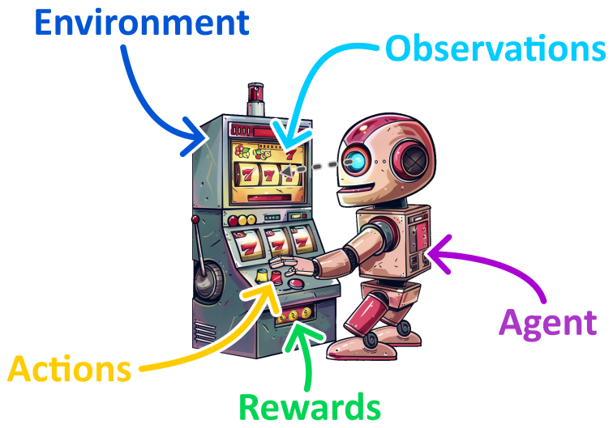

1st year CentraleSupélec
Coding Weeks
Autumn 2024
"Les Coding Weeks permettent aux étudiants de première année (Bac+3) de développer leurs compétences en programmation (développement Python) lors de deux semaines dédiées."

3rd year CentraleSupélec
Reinfocement Learning
Winter 2024
Lecture 01 - Exploration vs Exploitation
Lecture 02 - Markov Decision Processes
Lecture 03 - Dynamic Programming
Lecture 04 - Model Free Prediction
Lecture 05 - Model Free Control
Lecture 06 - Value Function Approximation
Lecture 07 - Policy Gradient methods
Lab 01 - Exploration vs Exploitation
Lab 02 - Dynamic Programming
Lab 03 - Model Free Prediction
Lab 04 - Model Free Control
Lab 05 - Value Function Approximation
Lab 06 - Policy Gradient Methods
Poster Session
1st year CentraleSupélec
Algorithmes & Complexité
Winter 2023-2024
Cours 0 - Introduction
Cours 1 - Parcours de graphes
Cours 2 - Le plus court chemin
Cours 3 - Arbre couvrant de poids minimal
Cours 4 - Graphes de flots
Cours 5 - Programmation dynamique
Cours 6 - Complexité des problèmes
Cours 7 - Méthodes exactes et approchées
1st year CentraleSupélec
Systèmes d'Information et Programmation
Autumn 2023
"Ce cours vise à donner aux futurs ingénieurs les bases des systèmes d'information qu'ils
utiliseront dans leur carrière et à leur permettre de concevoir et d'écrire 'proprement' un
programme informatique."
Les principales notions abordées sont les suivantes:
ligne de commandes;
architecture des ordinateurs;
bases de données (modelisation & SQL);
réseaux (& sécurité);
basic programming (loops, etc...).
1st year CentraleSupélec
Algorithmes & Complexité
Winter 2022-2023
Cours 0 - Introduction
Cours 1 - Parcours de graphes
Cours 2 - Le plus court chemin
Cours 3 - Arbre couvrant de poids minimal
Cours 4 - Graphes de flots
Cours 5 - Programmation dynamique
Cours 6 - Complexité des problèmes
Cours 7 - Méthodes exactes et approchées
1st year CentraleSupélec
Coding Weeks
Autumn 2022
"Les Coding Weeks permettent aux étudiants de première année (Bac+3) de développer leurs compétences en programmation (développement Python) lors de deux semaines dédiées."

1st year CentraleSupélec
Natural Language Processing
Winter 2022
Projet de traitement automatique du langage naturel en partenariat avec une entreprise (JobeoCampus).
3rd year CentraleSupélec
Reconaissance Visuelle
Spring 2022
Ce cours est une introduction à l'analyse visuelle d'images.
Il couvre les sujets suivants :
Vision humaine / Vision Artificielle - Sciences cognitives;
Formation de l'image - Geometrie de l'image;
Introduction au traitement de l'image (filtrage, contours, extraction de primitives)
Extraction et mise en correspondance de caractéristiques;
Segmentation; Reconnaissance; Mouvement;
Calibration / Reconstruction 3D.
2nd year CentraleSupélec
Optimisation
Autumn 2021
"Ce cours explorera divers aspects fondamentaux de l'optimisation, aussi bien continue que
discrète.
Les notions suivantes seront abordées et mises en oeuvre pratiquement:
formulation des problèmes d'optimisation, conditions d'existence de minimiseurs globaux et locaux,
convexité, dualité, multiplicateurs de Lagrange, méthodes du premier ordre, programmation linéaire,
programmation linéaire entière, approche « branch and bound » (séparation-évaluation), introduction
à l'optimisation stochastique."
1st year CentraleSupélec
Coding Weeks
Autumn 2021
"Les Coding Weeks permettent aux étudiants de première année (Bac+3) de développer leurs compétences en programmation (développement Python) lors de deux semaines dédiées."